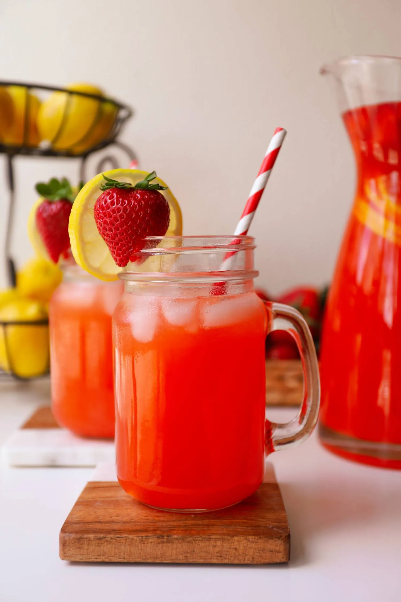
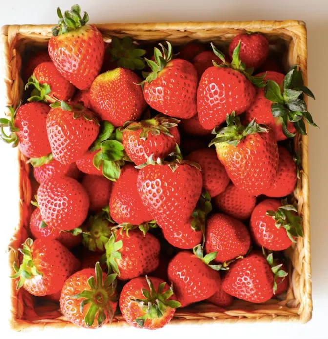

DRINKS
STRAWBERRY LEMONADE
PREP TIME: 30 MINS
t’s strawberry season so let’s learn how to make sweet and tangy strawberry lemonade
at home and even better! Ditch those cartons.
STRAWBERRY LEMONADE
It’s strawberry season so let’s learn how to make sweet and tangy strawberry lemonade at
home and even better! Ditch those cartons.
HOW TO MAKE STRAWBERRY LEMONADE
There are basically 3 parts to making this delicious drink and they are all really simple!
HOW TO MAKE STRAWBERRY LEMONADE
There are basically 3 parts to making this delicious drink and they are all really simple!
-
Squeeze your lemons! It’s a very tedious process but the reward is worth it.
We will need about 1 cup of fresh lemon juice which requires about 8 large lemons.
-
Make the strawberry juice! All you need is strawberries and water. To pick ripe
strawberries, look for those that are a deep red with no white spots. They will be
plump and shouldn’t be too firm or too soft. If you want lemonade on the sweeter
side, you can add a little sugar to the strawberry juice as well. Add the strawberries
and water to a food processor until there are no more chunks and it resembles juice.
Then strain out all the seeds with a fine sieve and it is good to go.
-
Sweeten it up with a simple syrup. This part is super easy because instead of making it
on the stove, we can make it in the microwave in 2 minutes. Just add the sugar to
some hot water and microwave in 30 second intervals until the syrup is clear and all the sugar is dissolved. Mix after each interval with a
spoon. If you don’t have a microwave, you can still do this over the stove. Just allow the syrup to chill after either way to room temperature.

Once all three parts above are done, you just mix it all together with more water and that’s it!
Super refreshing with some ice on a hot summer day
DRINKS
STRAWBERRY LEMONADE
PREP TIME: 30 MINS
INGREDIENTS
SIMPLE SYRUP
1 1/4 cup granulated white sugar
1 1/4 cup hot water
STRAWBERRY JUICE
10 ounces strawberries
1 cup water
LEMON JUICE
1 cup lemon juice about 8 large lemons
4 cups water
INSTRUCTIONS
TO MAKE THE SIMPLE SYRUP
-
To a microwave-safe bowl, add hot water along with the sugar.
-
Microwave for 30 seconds. Take it out and mix. Microwave for another 30
seconds. Take it out and mix again. If it is clear and all the sugar is dissolved,
it's done. If you still see sugar, microwave for another 30 seconds. Once clear,
pop in the fridge to cool down to room temperature.
TO MAKE THE STRAWBERRY JUICE
-
To a food processor, add the strawberries and water. Blend until there is no
more chunks and completely smooth like a juice.
-
Place a fine sieve over a bowl and strain the juice to remove the seeds. If it is
pouring very slowly, just swirl it around with a spoon and press gently against
the sieve and it will filter out a lot faster.
TO MAKE THE LEMONADE
-
To a very large pitcher, add the lemon juice and water along with all the
strawberry juice and 1 cup of the simple syrup. Taste it. If you want it more
sweet, add the rest of the simple syrup. If you want a less strong taste, dilute
it with a little bit of water. I did not add any extra water and used all the syrup
and the taste was perfect for me.
-
Place in the fridge to chill or serve in a glass with ice immediately and enjoy!